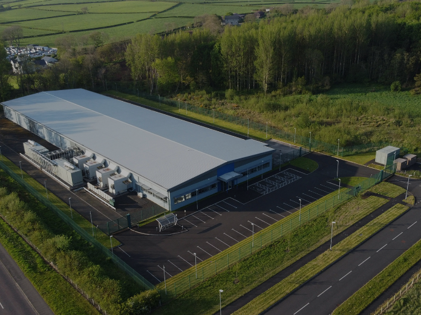
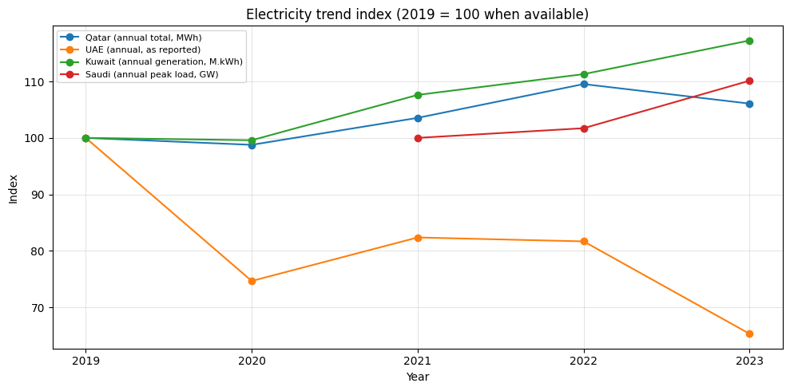
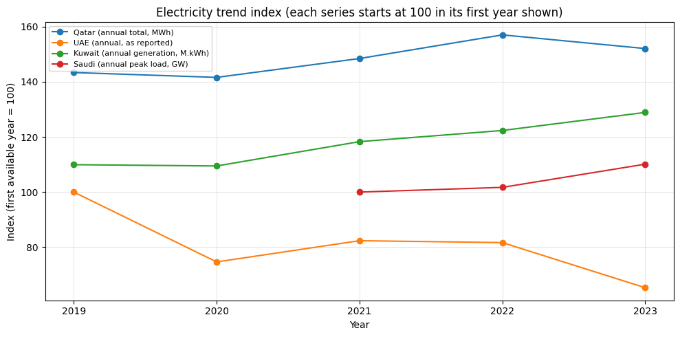
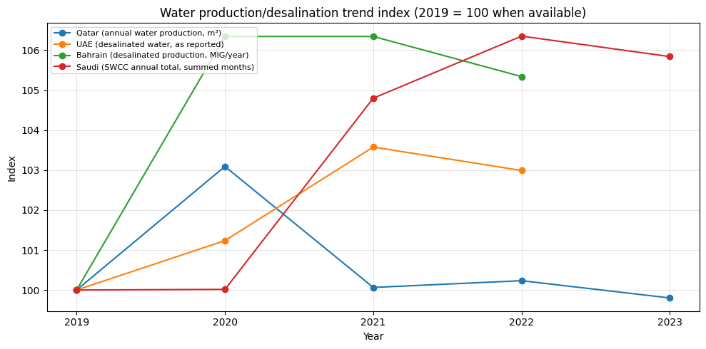
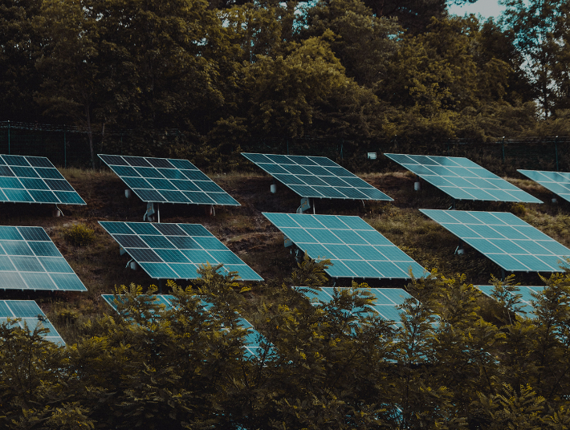

Technology, infrastructure & climate.
Data projects and assessments on AI compute, energy systems, solar technology, and infrastructure constraints.

US AI Datacenter Tracker
This is an interactive map of where the largest AI data center campuses are being planned and built across the United States. Every point is a real project drawn from my own tracking workbook, color coded by whether it is operational, under construction, or still just announced. Click any node and it gives you the developer, the location, the planned capacity, the dollar figure, the timeline, and a source link, so nothing here has to be taken on faith. The goal is to make the footprint legible to people who do not spend their week reading earnings calls and county zoning dockets.
I built this because the announcements move faster than the reporting. Most people have no idea that more than seventy gigawatt scale campuses have been
proposed since ChatGPT launched, or that a single one of these sites can demand as much electricity as a mid sized city. The buildout is happening at a speed and scale that outruns public understanding, and I want the public to actually see where it is landing and who is behind it.
I want to be clear that I am not against data centers. They are the physical backbone of everything we are building, and the country genuinely needs more of them. My argument is narrower and it is about pace and proportion. The industry is overextending. Companies are announcing capacity that dwarfs the entire current installed base, racing to break ground before tenants or power are actually secured, and some of it is already unraveling in public. Fermi pitched an eleven gigawatt campus and still cannot find a customer. OpenAI reversed its own Abilene expansion. That is not disciplined infrastructure growth. That is a land grab measured in gigawatts, and the cost of it lands on power grids, water tables, and ratepayers who never got a vote.
What I want to study is the path. The interesting question is not whether the boom is real, it is how policy is absorbing it and where the pressure goes next. Lordstown banned future data centers after one moved in. Texas wrote new reliability rules into Senate Bill 6. Utilities are quietly restructuring entire rate cases around a single hyperscale customer. I want to track that in real time, the widening gap between what gets announced and what actually gets energized, and the ways legislation around these sites is reshaping the real world. Following it closely is the only way to stay ahead of it rather than reacting after the concrete is poured.
This is an ongoing project. The map is a living snapshot, not a finished document. Projects stall, capacities get revised down, new sites get announced almost every month, and I will keep updating it as the picture changes.

Datacenter Feasibility in the Gulf
I collected and organized open-source data (OSINT) to assess the feasibility of scaling data centers across the Arab Gulf as AI demand accelerates and regional governments push to avoid falling behind. I focused on key infrastructure signals like electricity consumption, peak load, and desalinated water production, since power and cooling capacity shape what is actually realistic. By mapping these trends across Gulf states, I built a clearer picture of where capacity is growing, where constraints are tightening, and what that implies for future data center expansion tied to AI compute needs.




Analytical Review of Optima Solar Systems Offerings
DATE: February 17, 2026
SUBJECT: Analytical Review of Optima Solar Systems Offerings
| Category | Observation | What it means |
|---|---|---|
| Pricing architecture | The flyer uses a consistent markdown of about 20% across the product tiers and frames the deal around “Limited Stock.” | The discount structure creates urgency and makes waiting feel costly. |
| Upgrade psychology | The price gap between the Mini and Maxi versions stays small compared with the base cost. | This creates a decoy effect. The Maxi package feels like the smarter buy because buyers get more panels for a small added cost. |
| Battery and inverter fit | In the Gold 3KW tier, the 2.88kWh battery gives less than one hour of backup at full load. | The system fits load shedding needs, such as lights, fans, and basic backup. It is not full off-grid autonomy. |
| Panel density | The Platinum tier moves from 460W panels to higher-density 560W panels. | This suggests the company understands roof-space limits for larger residential installations. |
| System redundancy | The 10KW system uses two 5KW inverters in parallel. | If one inverter fails, the full system does not go dark. That adds resilience. |
| Market context | The pricing is listed in Ghanaian cedi. | The product targets a market where currency pressure and energy instability make solar feel like basic infrastructure, not a luxury upgrade. |
| Bill savings claim | The flyer claims “95% Bill Save.” | That claim is bold. It would likely require major lifestyle changes or a strong net metering setup, neither of which the flyer explains. |
| Hardware mismatch | The Diamond 5KW Maxi tier includes ten 460W panels, which produce 4.6kW peak against a 5KW inverter. | Customers pay for inverter headroom they cannot fully use unless they expand the array later. |
| Trust signals | The flyer highlights “Eco Friendly,” “Warranty,” and “Battery Life.” | These icons build trust, but the flyer does not state warranty length. For a major purchase, that is a weak spot. |
| Brand positioning | The tagline “Enriching lives” sells comfort and stability rather than just hardware. | The company is selling reliable power as a lifestyle, not only panels, batteries, and voltage. |